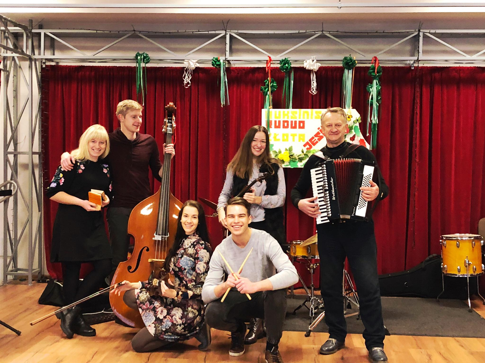
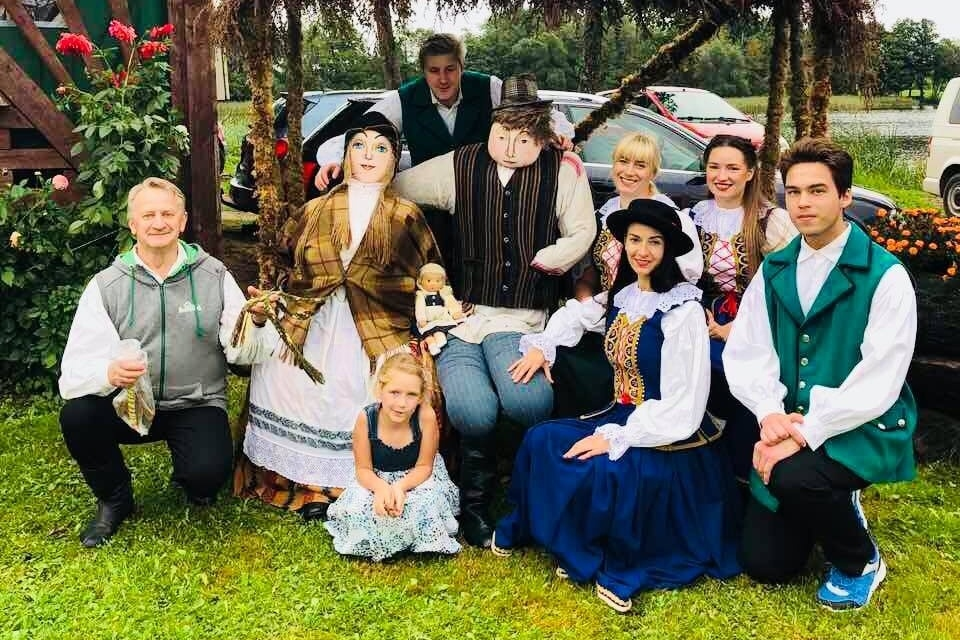
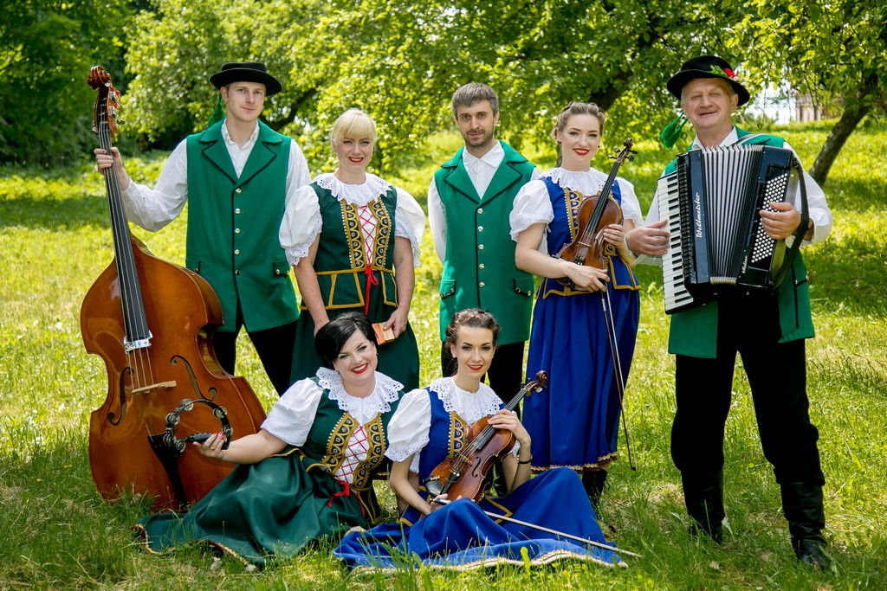

Kapela Świętojańska
|  |  |  |
"Kapela Świętojańska" from Sużany was established in 1991.
Many musicians and performers have passed through it.
The group performs a variety of songs: the repertoire includes both folk and patriotic songs.
The band can satisfy the tastes of the audience by performing songs in Polish, Lithuanian, Ukrainian and Tatar.
The repertoire also includes popular and well-known Jewish and Gypsy songs and songs.
The band also uses the compositions of local artists, which emphasizes its uniqueness.